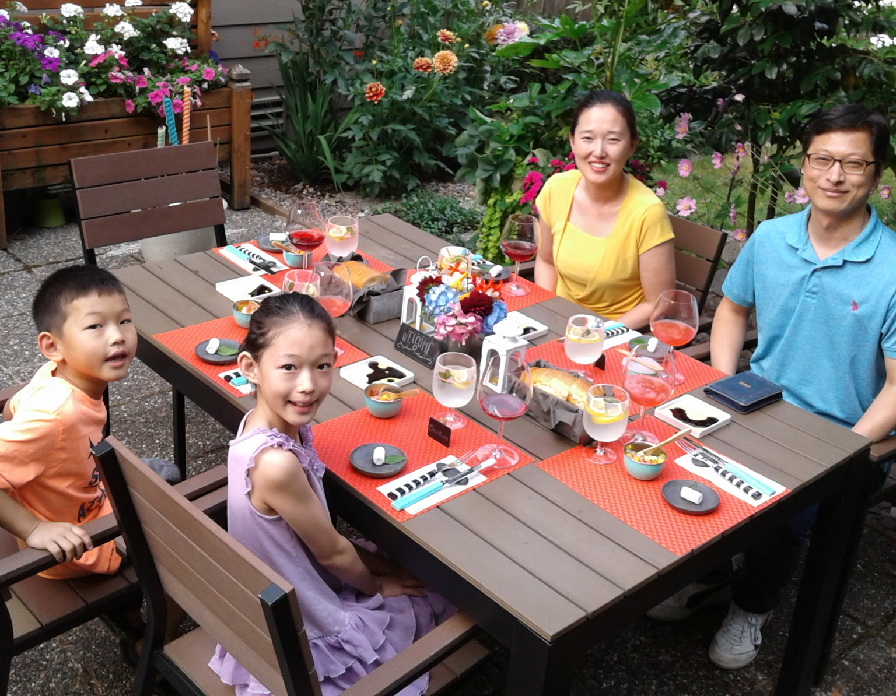

J-j-S-s ... Eom's Family
- Jong Whoi Eom
- Jaeyeong Song
- Olivia Seoeun Eom
- Judah Eunsung Eom

우리 가정(Eom's Family)은 4인 가족입니다. 아빠, 엄마, 서은, 은성.
아빠는 Jong, 엄마는 Song, 서은 Seoeun, 은성 Judah.
그렇게 얼버무려 맞추어 J(아빠)-j(은성)-S(엄마)-s(서은)로 하였습니다.
보통 그렇게 말하는 것처럼 '평범한 가정'이지만, 하나님의 사랑으로 특별하게~
하나님의 은혜로 비상하게~ 되어져 가는 Family입니다.
이제부터 우리들의 (사진)이야기를 시작해 봅니다.
- 2019. Road Trip
시애틀 ~ 옐로스톤 ~ 그랜드캐넌 ~ LA ~ 피닉스, 엘파소 ~ 샌안토니오에 이르기까지, 약 12일 동안 3,800mile(6,116km), 서울에서 부산까지 약 8회 가량 왕복할 만한 Road Trip이야기입니다.
- 2018. Korea Trip
미국에서 태어난 아이들(서은, 은성)을 위하여, 될 수 있는대로 많이 한국을 보여주고 싶었습니다. 그중에서도 2018년에 다녀온 한국 여행은, '뿌리 찾기'를 함께 한 여행이었습니다. 아빠의 고향 마을(장동)을 호남선 너머로 멀찍이 바라보았고, 엄마의 어린 시절 추억이 남겨진 보은에도 다녀왔습니다.
- 2017. Woodland Zoo
시애틀에 있는 동물원, Woodland zoo. 넓은 동물원을 걷다보면 발바닥에서부터 피곤이 올라오지만, 각종 동물들을 보면서 도란도란 이야기를 나누며 하루를 보낼 수 있었습니다. 아이들의 시간 속에서, 동물원을 함께 가고싶어하는 시기가 생각보다 짧게 지나가는 듯하여 아쉬움이 남습니다.
- 2016. KKCC
마음 속 깊이 상흔이 남겨진, 잊고 싶은 시간과 장소가 시작되었습니다.
- 2015. YWAM-Jeju
제주도 ~ 태국 ~ 중국 ~ 진주 ~ 제주도로 이어진 약 6개월의 대장정(?)이었습니다.